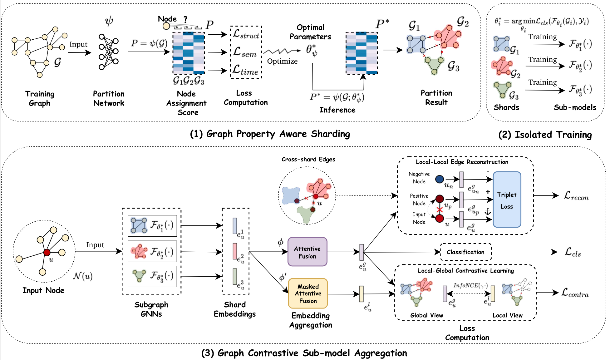
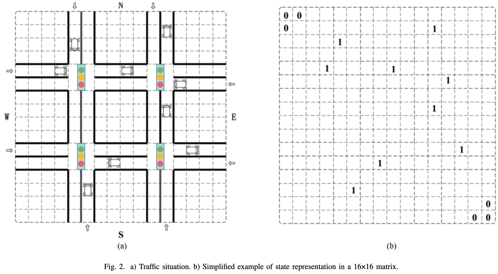

Resarch
I’m interested in Data Mining, and Artificial Intelligence. My current research focuses mainly on:
-
Graph Learning
-
Recommender Systems (RecSys)
-
Large Language Models (LLMs)
-
Trustworthy AI
Tutorials
- Yujuan Ding, Shijie Wang, Liangbo Ning, Qiaoyu Tan, Wenqi Fan, and Qing Li Recommender Systems in the Era of Large Language Models (LLMs) International Joint Conference on Artificial Intelligence (IJCAI, Tutorial), 2024.
- Wenqi Fan, Xiangyu Zhao, Lin Wang, Xiao Chen, Jingtong Gao, Qidong Liu, and Shijie Wang Trustworthy Recommender Systems: Foundations and Frontiers, KDD, 2023.
- Wenqi Fan, Xiangyu Zhao, Shijie Wang, Xiao Chen, Jingtong Gao, Qidong Liu, and Lin Wang Trustworthy Recommender Systems: Foundations and Frontiers International Joint Conference on Artificial Intelligence (IJCAI, Tutorial), 2023.
- Wenqi Fan, Xiangyu Zhao, Lin Wang, Xiao Chen, Jingtong Gao, Qidong Liu, and Shijie Wang Trustworthy Recommender Systems The Web Conference (WWW, Tutorial), 2023.
Publications

Jiahao Zhang, Lin Wang,
Shijie Wang,
Wenqi Fan
Graph Unlearning with Efficient Partial Retraining
Graph Unlearning with Efficient Partial Retraining
In
WWW PhD Symposium,
2024.
Graph Neural Networks (GNNs) have achieved remarkable success in various real-world applications. However, GNNs may be trained on undesirable graph data, which can degrade their performance and reliability. To enable trained GNNs to efficiently unlearn unwanted data, a desirable solution is retraining-based graph unlearning, which partitions the training graph into subgraphs and trains sub-models on them, allowing fast unlearning through partial retraining. However, the graph partition process causes information loss in the training graph, resulting in the low model utility of sub-GNN models. In this paper, we propose GraphRevoker, a novel graph unlearning framework that better maintains the model utility of unlearnable GNNs.

Shijie Wang,
Wenqi Fan, Xiao-yong Wei, Xiaowei Mei, Qing Li
Untargeted Black-box Attacks for Social Recommendations
Untargeted Black-box Attacks for Social Recommendations
In
Preprint,
2024.
To perform untargeted attacks on social recommender systems, attackers can construct malicious social relationships for fake users to enhance the attack performance. However, the coordination of social relations and item profiles is challenging for attacking black-box social recommendations. To address this limitation, we first conduct several preliminary studies to demonstrate the effectiveness of cross-community connections and cold-start items in degrading recommendations performance. Specifically, we propose a novel framework Multiattack based on multi-agent reinforcement learning to coordinate the generation of cold-start item profiles and cross-community social relations for conducting untargeted attacks on black-box social recommendations. Comprehensive experiments on various real-world datasets demonstrate the effectiveness of our proposed attacking framework under the black-box setting.

Shijie Wang,
Shangbo Wang
A novel Multi-Agent Deep RL Approach for Traffic Signal Control
A novel Multi-Agent Deep RL Approach for Traffic Signal Control
In
PerCom Workshop,
2023.
As travel demand increases and urban traffic condition becomes more complicated, applying multi-agent deep reinforcement learning (MARL) to traffic signal control becomes one of the hot topics. The rise of Reinforcement Learning (RL) has opened up opportunities for solving Adaptive Traffic Signal Control (ATSC) in complex urban traffic networks, and deep neural networks have further enhanced their ability to handle complex data. Traditional research in traffic signal control is based on the centralized Reinforcement Learning technique. However, in a large-scale road network, centralized RL is infeasible because of an exponential growth of joint state-action space. In this paper, we propose a Friend-Deep Q-network (Friend-DQN) approach for multiple traffic signal control in urban networks, which is based on an agent-cooperation scheme. In particular, the cooperation between multiple agents can reduce the state-action space and thus speed up the convergence.
Cite Graph Unlearning with Efficient Partial Retraining
@article{zhang2024graph,
title={Graph Unlearning with Efficient Partial Retraining},
author={Zhang, Jiahao and Wang, Lin and Wang, Shijie and Fan, Wenqi},
journal={arXiv preprint arXiv:2403.07353},
year={2024}
}Cite Untargeted Black-box Attacks for Social Recommendations
@article{fan2023untargeted,
title={Untargeted Black-box Attacks for Social Recommendations},
author={Fan, Wenqi and Wang, Shijie and Wei, Xiao-yong and Mei, Xiaowei and Li, Qing},
journal={arXiv preprint arXiv:2311.07127},
year={2023}
}Cite A novel multi-agent deep RL approach for traffic signal control
@inproceedings{shijie2023novel,
title={A novel multi-agent deep RL approach for traffic signal control},
author={Shijie, Wang and Shangbo, Wang},
booktitle={2023 IEEE International Conference on Pervasive Computing and Communications Workshops and other Affiliated Events (PerCom Workshops)},
pages={15--20},
year={2023},
organization={IEEE}
}